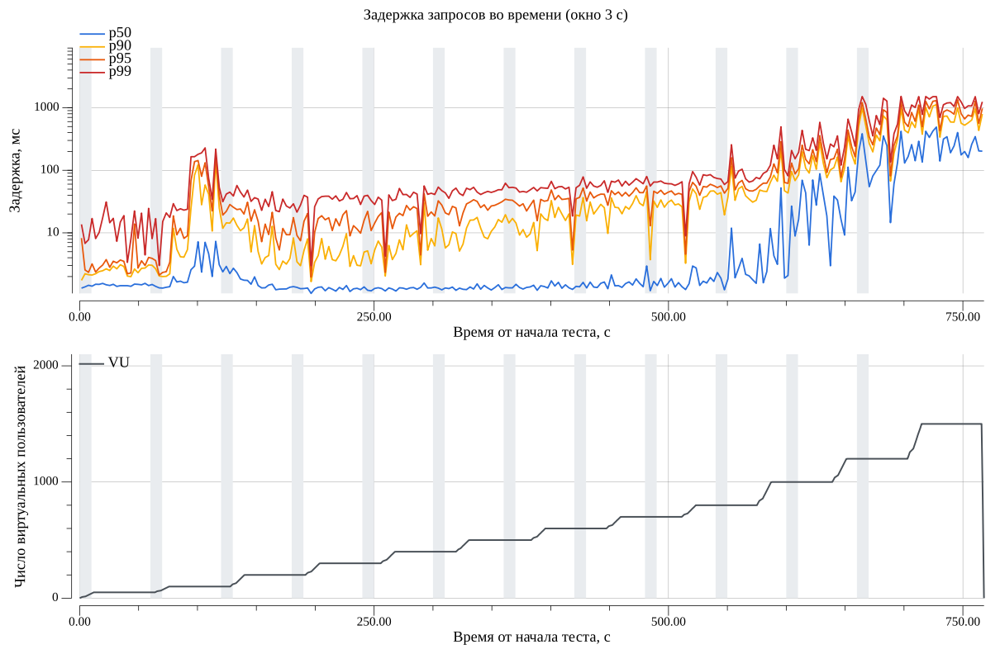
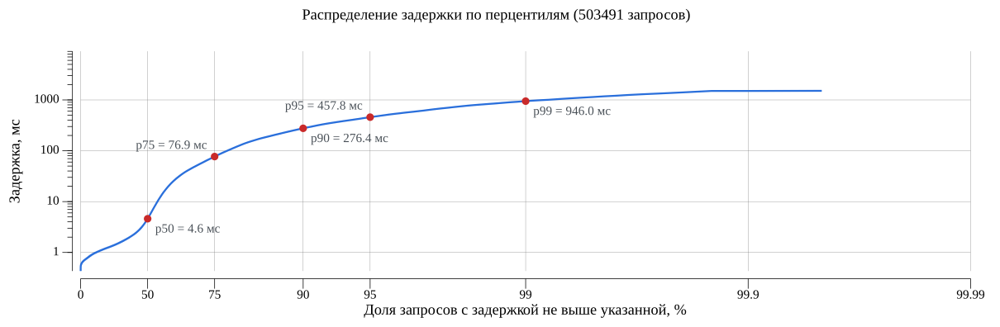
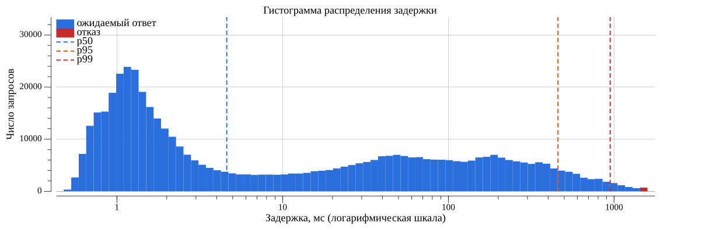
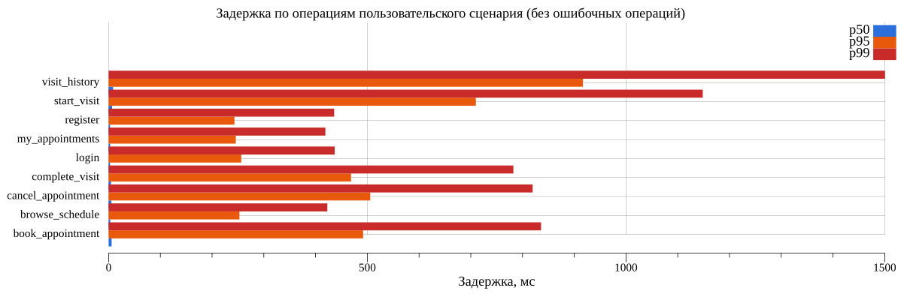
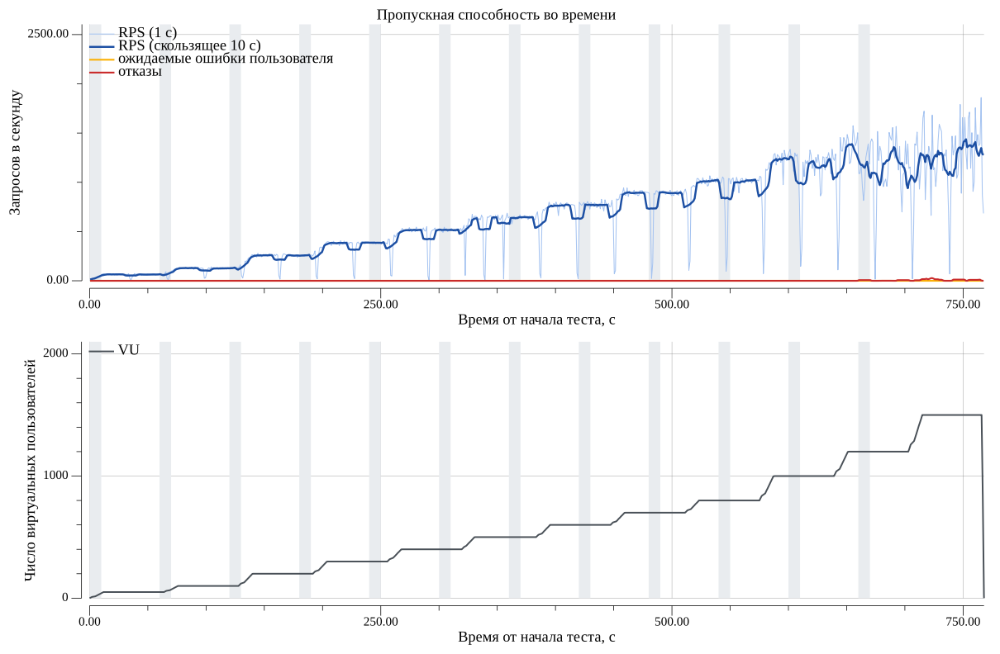
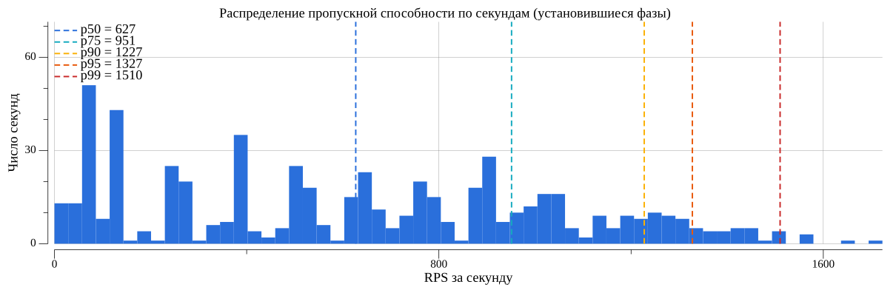
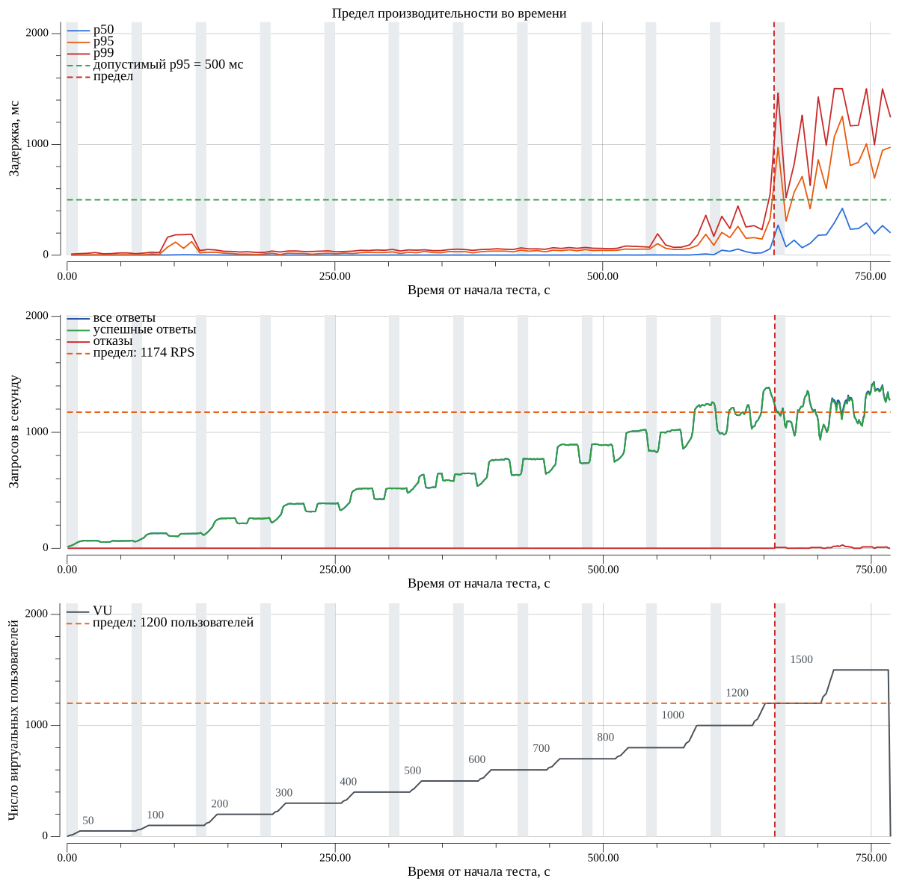
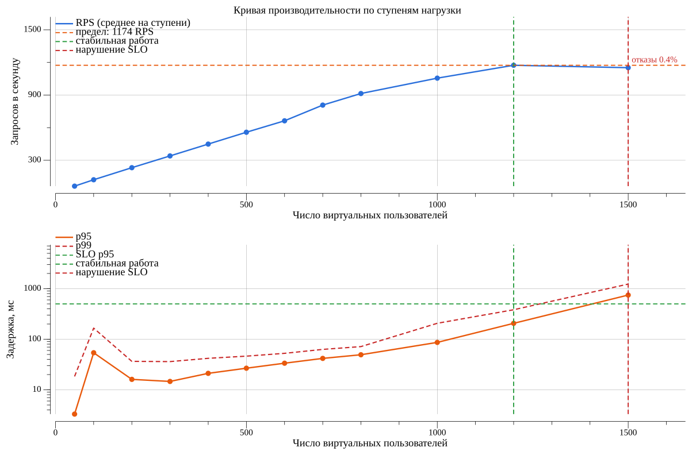
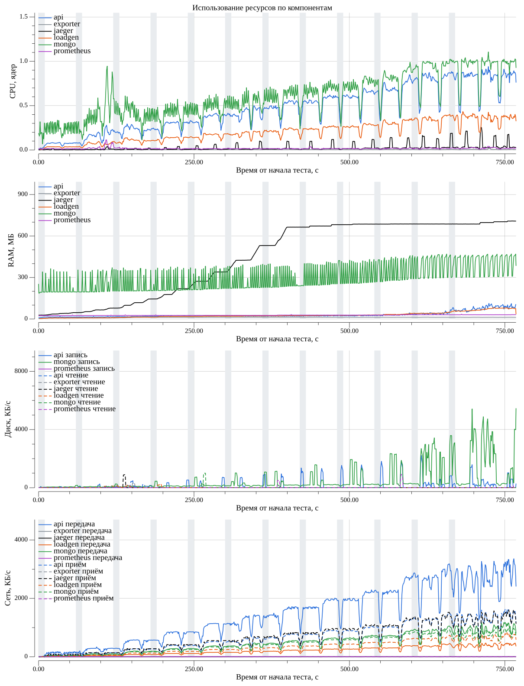

Ступенчатое увеличение нагрузки
Запросов503490
RPS среднее / медиана656 / 644
p50 / p95 задержки4.60 / 458 мс
p99 задержки946 мс
Отказы0.15%
Ошибочные операции0.00%
Стабильная работа до 1200 VU (~1174 RPS). Нарушение SLO начинается с 1500 VU. Максимальная пропускная способность 1174 RPS при 1200 VU.
Задержка
| Задержка, мс | count | min | mean | p50 | p75 | p90 | p95 | p99 | max |
|---|---|---|---|---|---|---|---|---|---|
| Все запросы | 503490 | 0.43 | 87.2 | 4.60 | 76.9 | 276 | 458 | 946 | 1745 |
| Корректные операции | 503490 | 0.43 | 87.2 | 4.60 | 76.9 | 276 | 458 | 946 | 1745 |
| Ошибочные операции | 0 | — | — | — | — | — | — | — | — |



Операции пользовательского сценария
| Операция | count | min | mean | p50 | p75 | p90 | p95 | p99 | max | Отказы | Ошибочные |
|---|---|---|---|---|---|---|---|---|---|---|---|
| book_appointment | 73084 | 0.80 | 95.9 | 5.86 | 95.9 | 346 | 492 | 836 | 1174 | 0.00% | 0.00% |
| browse_schedule | 73301 | 0.52 | 50.2 | 3.12 | 54.6 | 174 | 253 | 423 | 822 | 0.00% | 0.00% |
| cancel_appointment | 21850 | 0.72 | 96.1 | 5.43 | 94.8 | 354 | 506 | 820 | 1133 | 0.00% | 0.00% |
| complete_visit | 50598 | 0.67 | 89.4 | 4.76 | 87.3 | 332 | 469 | 782 | 1145 | 0.00% | 0.00% |
| login | 73467 | 0.43 | 50.4 | 2.79 | 54.5 | 175 | 256 | 437 | 852 | 0.00% | 0.00% |
| my_appointments | 72810 | 0.50 | 48.8 | 3.03 | 53.3 | 169 | 246 | 419 | 823 | 0.00% | 0.00% |
| register | 15379 | 0.47 | 48.9 | 2.74 | 51.8 | 172 | 243 | 436 | 760 | 0.00% | 0.00% |
| start_visit | 50726 | 0.94 | 134 | 6.80 | 133 | 507 | 710 | 1148 | 1505 | 0.01% | 0.00% |
| visit_history | 72276 | 0.70 | 163 | 8.70 | 159 | 593 | 917 | 1501 | 1745 | 1.01% | 0.00% |

Пропускная способность
| Показатель | count | min | mean | p50 | p75 | p90 | p95 | p99 | max |
|---|---|---|---|---|---|---|---|---|---|
| RPS за секунду | 768 | 0.00 | 656 | 644 | 1003 | 1281 | 1390 | 1655 | 1860 |


Фазы нагрузки
| Участок | VU | RPS ср. | RPS p50 | RPS p5 | p50 мс | p95 мс | p99 мс | Отказы | CPU api | CPU mongo | RAM api, МБ | SLO |
|---|---|---|---|---|---|---|---|---|---|---|---|---|
| разгон до 50 | 50 | 25.3 | 22.5 | 4.15 | 1.38 | 2.43 | 9.73 | 0.00% | 0.02 | 0.19 | 10.9 | да |
| 50 VU | 50 | 61.9 | 64.0 | 44.1 | 1.47 | 3.31 | 18.4 | 0.00% | 0.07 | 0.25 | 14.1 | да |
| разгон до 100 | 100 | 59.2 | 65.5 | 15.1 | 1.41 | 3.44 | 9.42 | 0.00% | 0.07 | 0.23 | 13.8 | да |
| 100 VU | 100 | 121 | 126 | 89.0 | 1.97 | 54.0 | 166 | 0.00% | 0.16 | 0.42 | 15.1 | да |
| разгон до 200 | 200 | 135 | 132 | 123 | 2.44 | 21.6 | 40.6 | 0.00% | 0.20 | 0.48 | 16.4 | да |
| 200 VU | 200 | 232 | 254 | 50.8 | 1.47 | 16.1 | 36.5 | 0.00% | 0.22 | 0.40 | 17.8 | да |
| разгон до 300 | 300 | 258 | 260 | 247 | 1.31 | 10.5 | 25.9 | 0.00% | 0.24 | 0.40 | 19.4 | да |
| 300 VU | 300 | 340 | 378 | 52.0 | 1.26 | 14.6 | 36.1 | 0.00% | 0.27 | 0.40 | 19.6 | да |
| разгон до 400 | 400 | 386 | 386 | 376 | 1.28 | 17.3 | 37.0 | 0.00% | 0.31 | 0.45 | 19.4 | да |
| 400 VU | 400 | 449 | 504 | 51.2 | 1.29 | 21.1 | 41.9 | 0.00% | 0.34 | 0.47 | 20.3 | да |
| разгон до 500 | 500 | 516 | 517 | 495 | 1.33 | 29.4 | 49.6 | 0.00% | 0.40 | 0.53 | 20.5 | да |
| 500 VU | 500 | 558 | 619 | 57.7 | 1.30 | 26.7 | 46.3 | 0.00% | 0.40 | 0.52 | 20.7 | да |
| разгон до 600 | 600 | 637 | 644 | 598 | 1.30 | 32.2 | 54.7 | 0.00% | 0.46 | 0.58 | 21.0 | да |
| 600 VU | 600 | 663 | 726 | 73.7 | 1.39 | 33.6 | 52.6 | 0.00% | 0.49 | 0.60 | 21.4 | да |
| разгон до 700 | 700 | 773 | 780 | 724 | 1.46 | 41.5 | 63.0 | 0.00% | 0.45 | 0.53 | 22.0 | да |
| 700 VU | 700 | 807 | 844 | 700 | 1.47 | 41.8 | 62.9 | 0.00% | 0.55 | 0.66 | 23.0 | да |
| разгон до 800 | 800 | 719 | 886 | 93.8 | 1.61 | 49.3 | 69.8 | 0.00% | 0.47 | 0.55 | 24.0 | да |
| 800 VU | 800 | 914 | 924 | 796 | 1.62 | 49.3 | 71.5 | 0.00% | 0.60 | 0.71 | 24.4 | да |
| разгон до 1000 | 1000 | 822 | 1012 | 161 | 1.67 | 51.0 | 69.6 | 0.00% | 0.58 | 0.68 | 26.1 | да |
| 1000 VU | 1000 | 1055 | 1038 | 806 | 3.05 | 86.6 | 207 | 0.00% | 0.67 | 0.79 | 30.4 | да |
| разгон до 1200 | 1200 | 1203 | 1252 | 933 | 9.22 | 94.7 | 174 | 0.00% | 0.79 | 0.92 | 35.9 | да |
| 1200 VU | 1200 | 1174 | 1244 | 381 | 37.6 | 206 | 383 | 0.00% | 0.76 | 0.88 | 40.4 | да |
| разгон до 1500 | 1500 | 1122 | 1132 | 875 | 203 | 826 | 1331 | 0.65% | 0.86 | 1.00 | 64.4 | нет |
| 1500 VU | 1500 | 1152 | 1221 | 524 | 147 | 748 | 1233 | 0.44% | 0.78 | 0.91 | 68.1 | нет |
Поиск предела производительности


Использование ресурсов
| Компонент | Метрика | min | max | mean | median | p95 |
|---|---|---|---|---|---|---|
| api | CPU, ядер | 0.01 | 0.94 | 0.46 | 0.45 | 0.86 |
| api | Троттлинг CPU, с/с | 0.00 | 0.15 | 0.01 | 0.00 | 0.05 |
| api | Чтение с диска, КБ/с | 0.00 | 551 | 6.60 | 0.00 | 12.5 |
| api | Запись на диск, КБ/с | 0.00 | 2218 | 120 | 0.00 | 878 |
| api | RAM (working set), МБ | 8.48 | 113 | 30.1 | 21.3 | 84.9 |
| api | Сеть, приём КБ/с | 0.26 | 1623 | 659 | 609 | 1435 |
| api | Сеть, передача КБ/с | 0.10 | 3357 | 1419 | 1355 | 2957 |
| api | Процессы и потоки | 8.00 | 16.0 | 9.26 | 9.00 | 10.0 |
| exporter | CPU, ядер | 0.00 | 0.02 | 0.00 | 0.00 | 0.01 |
| exporter | Троттлинг CPU, с/с | 0.00 | 0.00 | 0.00 | 0.00 | 0.00 |
| exporter | Чтение с диска, КБ/с | 0.00 | 322 | 6.69 | 0.00 | 39.6 |
| exporter | Запись на диск, КБ/с | 0.00 | 0.00 | 0.00 | 0.00 | 0.00 |
| exporter | RAM (working set), МБ | 2.74 | 13.2 | 11.6 | 12.5 | 12.8 |
| exporter | Сеть, приём КБ/с | 0.27 | 0.57 | 0.51 | 0.54 | 0.55 |
| exporter | Сеть, передача КБ/с | 2.30 | 4.81 | 4.33 | 4.65 | 4.67 |
| exporter | Процессы и потоки | 4.00 | 5.00 | 4.99 | 5.00 | 5.00 |
| jaeger | CPU, ядер | 0.00 | 0.26 | 0.02 | 0.01 | 0.12 |
| jaeger | Троттлинг CPU, с/с | 0.00 | 0.00 | 0.00 | 0.00 | 0.00 |
| jaeger | Чтение с диска, КБ/с | 0.00 | 891 | 4.61 | 0.00 | 0.00 |
| jaeger | Запись на диск, КБ/с | 0.00 | 0.00 | 0.00 | 0.00 | 0.00 |
| jaeger | RAM (working set), МБ | 27.6 | 709 | 444 | 556 | 697 |
| jaeger | Сеть, приём КБ/с | 0.00 | 1611 | 681 | 646 | 1423 |
| jaeger | Сеть, передача КБ/с | 0.00 | 3.27 | 1.46 | 1.42 | 2.88 |
| jaeger | Процессы и потоки | 7.00 | 8.00 | 7.76 | 8.00 | 8.00 |
| loadgen | CPU, ядер | 0.00 | 0.43 | 0.20 | 0.20 | 0.39 |
| loadgen | Троттлинг CPU, с/с | 0.00 | 0.00 | 0.00 | 0.00 | 0.00 |
| loadgen | Чтение с диска, КБ/с | 0.00 | 273 | 6.75 | 0.00 | 36.0 |
| loadgen | Запись на диск, КБ/с | 0.00 | 0.00 | 0.00 | 0.00 | 0.00 |
| loadgen | RAM (working set), МБ | 2.93 | 81.1 | 28.0 | 22.9 | 75.4 |
| loadgen | Сеть, приём КБ/с | 2.84 | 824 | 321 | 299 | 699 |
| loadgen | Сеть, передача КБ/с | 3.22 | 473 | 197 | 186 | 421 |
| loadgen | Процессы и потоки | 7.00 | 10.0 | 8.86 | 9.00 | 9.00 |
| mongo | CPU, ядер | 0.07 | 1.11 | 0.60 | 0.57 | 1.00 |
| mongo | Троттлинг CPU, с/с | 0.00 | 1.14 | 0.36 | 0.22 | 1.07 |
| mongo | Чтение с диска, КБ/с | 0.00 | 998 | 7.30 | 0.00 | 4.00 |
| mongo | Запись на диск, КБ/с | 1.36 | 5419 | 524 | 173 | 2976 |
| mongo | RAM (working set), МБ | 187 | 470 | 297 | 264 | 456 |
| mongo | Сеть, приём КБ/с | 0.11 | 997 | 418 | 404 | 862 |
| mongo | Сеть, передача КБ/с | 0.03 | 1175 | 463 | 429 | 1019 |
| mongo | Процессы и потоки | 39.0 | 153 | 93.5 | 88.0 | 149 |
| prometheus | CPU, ядер | 0.01 | 0.11 | 0.02 | 0.02 | 0.03 |
| prometheus | Троттлинг CPU, с/с | 0.00 | 0.00 | 0.00 | 0.00 | 0.00 |
| prometheus | Чтение с диска, КБ/с | 0.00 | 932 | 7.43 | 0.00 | 0.00 |
| prometheus | Запись на диск, КБ/с | 0.00 | 14.7 | 1.30 | 0.00 | 7.00 |
| prometheus | RAM (working set), МБ | 23.8 | 35.1 | 27.6 | 28.0 | 31.1 |
| prometheus | Сеть, приём КБ/с | 2.80 | 7.03 | 6.28 | 6.72 | 6.83 |
| prometheus | Сеть, передача КБ/с | 0.46 | 1.15 | 0.97 | 1.02 | 1.12 |
| prometheus | Процессы и потоки | 8.00 | 14.0 | 8.04 | 8.00 | 8.00 |

Коды ответов
| Код | Запросов |
|---|---|
| 200 | 363568 |
| 201 | 139185 |
| 500 | 737 |
Окружение прогона
| Компонент | Логические CPU | Квота CPU | Резерв RAM, МБ | Лимит RAM, МБ | Образ | ID образа |
|---|---|---|---|---|---|---|
| api | 0,1 | 1 | 512 | 512 | vitaline-lab6-api:20261115-201441-ramp-4d67 | 579b68ac81b6 |
| exporter | 6,7 | — | 64 | 64 | vitaline-lab4-exporter:1 | 1d23c3f2327d |
| jaeger | 6,7 | — | 1536 | 1536 | jaegertracing/jaeger:2.11.0 | b585df1b6299 |
| loadgen | 4,5 | — | 2048 | 2048 | vitaline-lab4-loadgen:1 | 48e1046c6d0e |
| mongo | 2,3 | 1 | 1024 | 1024 | mongo:7 | 9896df581dfd |
| prometheus | 6,7 | — | 768 | 768 | prom/prometheus:v3.5.0 | 63805ebb8d2b |